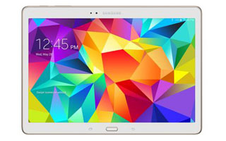

Samsung Galaxy Tab S 10.5
 The new Galaxy Tab S is something of a conundrum: on the one hand, it represents a big shift from Samsung, one that promises to finally give it something that can be considered a rival to the iPad, on the other, an over-reliance of familiarity.The Galaxy Tab S range packs one major advantage over the competition: one of the best screens on the market to be plugged into a tablet.